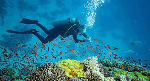

Exploring the Underwater Wonders: Scuba Diving in Kalpitiya
Kalpitiya, a picturesque coastal town located on the western coast of Sri Lanka, is not only renowned for its pristine beaches and vibrant marine life but also for its exceptional scuba diving opportunities. With its clear turquoise waters, diverse marine ecosystems, and a variety of underwater attractions, Kalpitiya has become a favorite destination for scuba diving enthusiasts from around the world. Let's delve into the underwater wonders that await divers in Kalpitiya.
Marine Life Diversity:
One of the most captivating aspects of scuba diving in Kalpitiya is its rich marine biodiversity. Divers can encounter a wide array of marine creatures, from colorful reef fish to majestic sea turtles and even the occasional sighting of elusive marine mammals like dolphins and whales. The coral reefs in Kalpitiya are teeming with life, offering a mesmerizing underwater world to explore.Coral Reefs:
 The coral reefs of Kalpitiya are a treasure trove of marine diversity. Divers can explore vibrant coral gardens filled with hard and soft corals, creating a kaleidoscope of colors. These reefs provide shelter and sustenance to numerous marine species, making them not only visually stunning but also ecologically significant. From tiny nudibranchs to graceful reef sharks, the reefs of Kalpitiya are home to a myriad of fascinating creatures.Wrecks and Underwater Structures:
In addition to natural wonders, Kalpitiya also boasts artificial reefs in the form of sunken wrecks and structures. These underwater attractions not only serve as habitats for marine life but also offer unique diving experiences. Exploring sunken ships like the Bar Reef Wreck or diving around submerged structures such as old pier remnants adds an adventurous twist to scuba diving in Kalpitiya.Best Time for Scuba Diving:
The best time to experience scuba diving in Kalpitiya is during the dry season, which typically runs from November to April. During this period, the weather conditions are favorable, with calm seas and excellent visibility underwater, making it ideal for diving enthusiasts to enjoy the underwater marvels that Kalpitiya has to offer.Dive Sites in Kalpitiya:
Kalpitiya is dotted with several dive sites that cater to divers of all skill levels. From shallow reefs suitable for beginners to deeper sites for advanced divers, there's something for everyone. Popular dive sites in Kalpitiya include Bar Reef, Dutch Bay, and St. Anthony's Reef, each offering unique underwater landscapes and marine encounters.Conservation Efforts:
The conservation of marine ecosystems is of utmost importance in Kalpitiya. Local dive operators and organizations actively promote responsible diving practices, including reef conservation, marine debris cleanups, and sustainable tourism initiatives. Divers are encouraged to follow guidelines to minimize their environmental impact and contribute to the preservation of Kalpitiya's marine heritage.
NOTE:- If you like to Scuba Diving, you can know about the prices and packages from the hotels mentioned on our home page and can book.